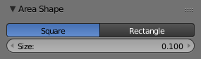

Вступ¶
Лампа типу «Площина» -- Area імітує освітлення, що йде від поверхнево-подібного випромінювача. Як деякі з прикладів вживання площинної лампи -- екран телевізора, офісні неонові лампи, вікно або хмарне небо. Лампа типу «Площина» продукує тіні з м'якими краями, що відбираються по розміру сітки лампи, який визначається користувачем. Це прямо протилежне точковим штучним освітлювачам, які продукують тіні з різкими краями.

Common options.
Опції лампи¶
- Відстань -- Distance, Енергія -- Energy та Колір -- Color
Ці устави є загальними для більшості типів ламп та описані тут -- Light Properties.
Зауважте, що устава «Відстань» -- Distance є набагато більш чутлива та важлива для ламп Area, ніж для інших ламп; зазвичай, будь-які об'єкти у межах діапазону відстані Distance будуть мати вирізнений та переекспонований вигляд. Для найкращих результатів задавайте значення Distance лише трохи меншим значення відстані до об'єкта, який ви нею освітлюєте.
- Гамма -- Gamma
Величина гамма корекції яскравості освітлення. Вищі значення дають більший контраст та коротший спад.
Лампа Area не має устав спаду освітлення. Вона для затухання освітлення використовує лише один закон -- «обернено квадратично» -- "inverse quadratic". Єдиний спосіб керувати спадом на основі цього закону -- використати значення устав Distance та/або Gamma.
- Лише Цей Шар -- This Layer Only, Негативно -- Negative, Блікування -- Specular та Розсіяння -- Diffuse
- Ці устави керують тим, як ця лампа впливає світлом на сцену, про що описано тут -- What Light Affects.
Тіні -- Shadows¶
Area light ray-traced shadows are described here: Ray-traced Shadows.
Коли обрано джерело освітлення типу Area, то панель «Тінь» -- Shadow має наступний вигляд:

Устави методу «Адаптивний QMC» -- Adaptive QMC. |

Устави методу «Постійний Розкид» -- Constant Jittered. |
Форма Площини -- Area Shape¶
Форма площинного освітлювача може бути задана як «Квадрат» -- Square або як «Прямокутник» -- Rectangle.

Опції форми «Квадрат». |

Опції форми «Прямокутник». |
- Квадрат -- Square / Прямокутник -- Rectangular
- Дає випромінювання світла з квадратної або з прямокутної площини, відповідно.
- Розмір -- Size / Розмір X -- Size X / Розмір Y -- Size Y
- Розміри для форми «Квадрат» -- Square та «Прямокутник» Rectangle, відповідно.
Ghi chú
Поради щодо форми
Вибір відповідної форми для вашого освітлювача Area покращить правдоподібність вашої сцени. Наприклад, ви можете мати інтер'єрну сцену та хочете імітувати світло, що входить через вікно. Ви можете розмістити площинну лампу форми Rectangle у віконному отворі (вертикально) або зробити інакше, щоб світло йшло від неонів (горизонтально), при цьому, задавши належну пропорцію за допомогою устав Size X та Size Y. Для імітації світла, випромінюваного екраном телевізора, у більшості випадків буде краще вжити форму «Квадрат» Square для площинної лампи.